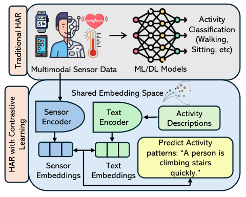
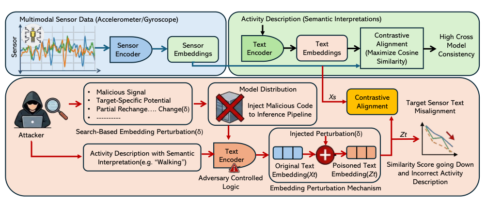
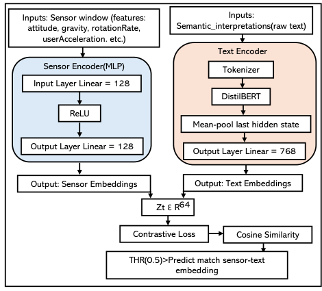
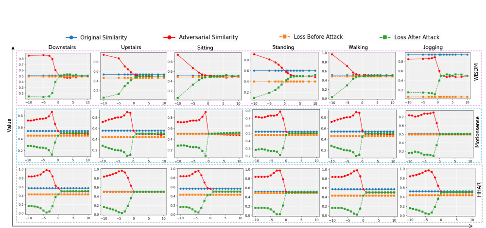
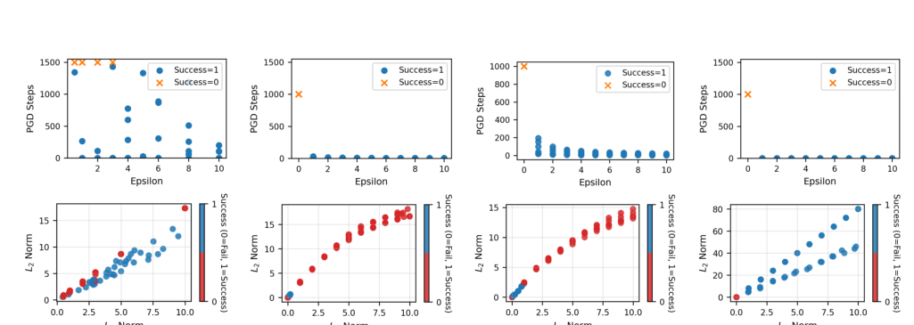

Breaking Sensor–Text Alignment
A cross-modal embedding poisoning attack against contrastive multimodal human activity recognition. The attack perturbs the text-side embedding at inference time, lowering correct sensor–text cosine similarity and causing semantic drift.

From activity classification to semantic alignment
Core idea
Contrastive HAR maps wearable sensor windows and natural-language activity descriptions into the same representation space. This enables a model to match a sensor pattern with a semantic description such as “a person is climbing stairs quickly.”
The security risk is that a small text-embedding perturbation can move the semantic prototype away from the correct sensor embedding, making the model choose an incorrect interpretation.

Search-based embedding poisoning
The attack keeps the sensor input fixed and iteratively updates the text-side perturbation with projected gradient ascent. The goal is to increase contrastive loss and reduce correct sensor–text similarity.

Attack pipeline
Accelerometer, gyroscope, or biosignal segment.
Semantic description for the activity or state.
Add bounded δ to the text embedding.
- Optimization: projected gradient ascent.
- Budget: L∞ bound with ε sweep from −10 to 10.
- Representative setting: α = 0.005, K = 1000.
Motion and physiological benchmarks
WISDM
Smartphone accelerometer data for walking, jogging, stairs, sitting, and standing.
MotionSense
Smartphone accelerometer and gyroscope signals for common daily activities.
HHAR
Smartphone and smartwatch signals used to test device heterogeneity.
WESAD
Multimodal physiological signals, including ECG, EDA, respiration, temperature, and BVP.
Training setup
Approximately 60,000 sensor–text pairs trained for 30 epochs with batch size 4 and learning rate 1e−4.
Metric
Cosine similarity measures semantic closeness. Values above 0.5 are treated as matched pairs.
Move ε and watch alignment degrade
Select a dataset, then adjust the perturbation budget. The demo summarizes the paper’s reported attack trends: successful attacks reduce cosine similarity and increase contrastive loss.
WISDM
Key findings from the paper
Before attack: mean cosine similarity
| Dataset | Positive | Negative |
|---|---|---|
| WISDM | 0.5715 | 0.5805 |
| MotionSense | 0.6009 | 0.6315 |
| HHAR | 0.5769 | 0.5896 |
| WESAD | 0.7956 | 0.8099 |
Observed vulnerability
MotionSense, HHAR, and WESAD are sensitive to very small positive perturbations, often around ε = 1. WISDM varies by activity: Downstairs is the most vulnerable, while Standing and Walking require larger perturbations.
Attack execution time is around 10 minutes for WISDM, 5 minutes for MotionSense and HHAR, and 3 minutes for WESAD.

